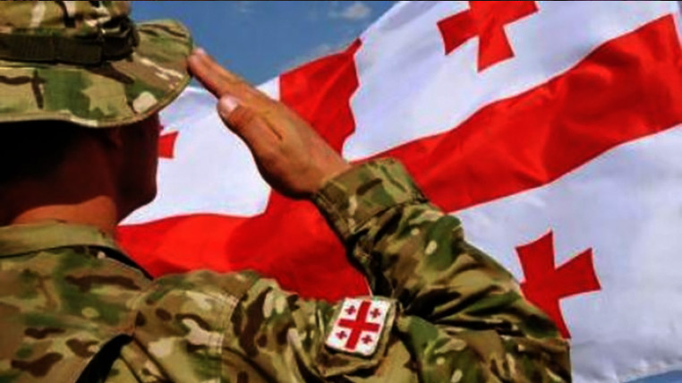

წვევამდელებისთვის სამხედრო სამსახურის ვადა შემცირდება
იურიდიულ საკითხთა კომიტეტმა პირველი მოსმენით განიხილა „თავდაცვის კოდექსის“ პროექტი, რომელიც ახლებურად დაარეგულირებს თავდაცვის სამინისტროს მოწყობის, საქმიანობისა და სამხედრო სამსახურთან დაკავშირებულ საკითხებს. პროექტის თანახმად, სავალდებულო სამხედრო სამსახურს შეეცვლება სახელი და ეწოდება - „წვევამდელთა ეროვნული სამხედრო სამსახური“. კოდექსის თანახმად, იგეგმება წვევამდელთა ეროვნული სამხედრო სამსახურის ვადის შემცირება. კერძოდ, 12-თვიანი ვადის ნაცვლად შემოთავაზებულია სამსახურის დიფერენცირებული ვადები: საბრძოლო ქვედანაყოფში სამსახურისათვის - 6 თვე; დაცვის ან უზრუნველყოფის ქვედანაყოფში სამსახურისათვის - 8 თვე; უმცროს სამეთაურო თანამდებობებზე და წინასწარ განსაზღვრულ სპეციალობებზე სამსახურისათვის - 11 თვე. გაწვევა განხორციელდება სამინისტროს პრიორიტეტების გათვალისწინებით. წვევამდელთა ეროვნული სამხედრო სამსახურის გავლა შესაძლებელი იქნება მხოლოდ სამინისტროს სისტემაში. აღნიშნული სიახლეების ამოქმედება იგეგმება 2025 წლის პირველი იანვრიდან.